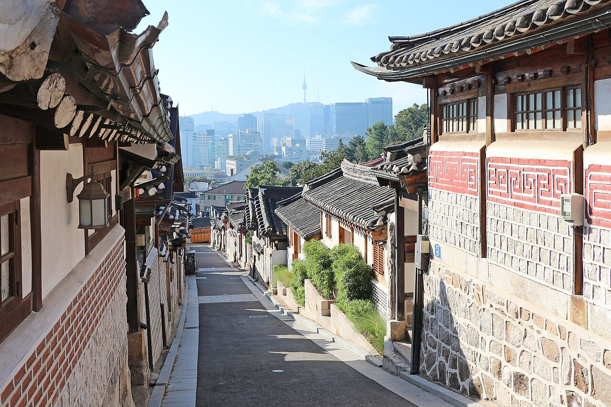
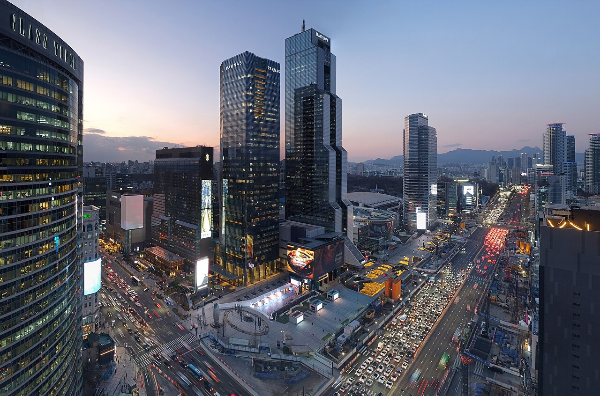
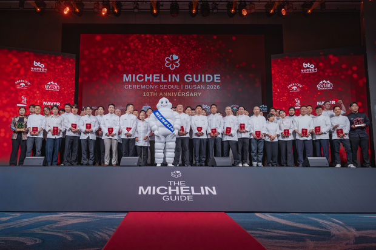

Seoul · South Korea
June 2026 · Weekend · 118 citations
Weekend Programme
Two Days
in Seoul
Palaces & neighbourhoods by day · Michelin dining by night

The Cultural North · Day

Gangnam Michelin Row · Night
Critical path — do this first
Book the dinner before anything else.
Seoul has exactly one 3-star table — Mingles requires 8–12 weeks advance booking; all 10 two-star addresses need 4–8 weeks.[1]
English-language reservations through Catchtable — the official 2026 Michelin booking partner.
Which evening the reservation lands on structures everything else.
Day 1
Old Seoul

Mid-morning · 11:00
Joseon-era hanok rooftops and hillside viewpoints up into Samcheong-dong cafés.
Residential alleys: entry 10:00–17:00 only — ₩100,000 fine outside those hours.[4]
Lunch · 13:00
Insadong & Ikseon-dong
Antiques, galleries, tea houses. Adjacent Ikseon-dong is a dense hanok-alley maze of cafés and boutiques.
Try the pedestrian strip for street snacks.
Afternoon · 14:30
UNESCO palace — quieter than Gyeongbokgung. The Secret Garden is a capped ~90-min guided walk.
Pre-book via royal.khs.go.kr.[5]
₩3,000 palace + ₩8,000 garden. Closed Mon.
Pre-book the garden · visitor cap applies
Evening · 18:30
Gwangjang Market — or the Dinner
If the Michelin table is tonight: cross to Gangnam by taxi (~30 min, ~₩12,000).
If not: the "Meokjagolmok" food alley — bindaetteok, yukhoe, finger-sized mayak gimbap (~₩3,000 for ten).[6]
Drinks in Euljiro after (speakeasies open from ~21:00).
Day 2
Modern Seoul
Morning · 10:00
Factory-conversion cafés (Cafe Onion), design pop-ups, and Common Ground — the world's largest shipping-container mall. Wander until 13:00; save appetite.
Afternoon · 13:30
Garosu-gil or Myeongdong
Gangnam's ginkgo-lined Garosu-gil: K-beauty flagships (Sulwhasoo, Gentle Monster, Tamburins) — also the street for post-dinner drinks after Mingles.
Or Myeongdong for dense cosmetics and an efficient street-food graze.
Late afternoon · 16:00
N Seoul Tower — or Seoul Sky
N Seoul Tower: cable car ₩15,000 RT, obs ₩29,000; open 10:00–23:00.[7]
Seoul Sky at Lotte World Tower: 497m, glass floor at 118F — more dramatic, more tourist-dense.
Best at dusk for the light transition.
Sunset · 19:00
Han River + Banpo Bridge
Picnic on the riverbank; free Guinness-record rainbow fountain at Banpo Bridge — shows every 30 min from sunset, Mar–Oct, ~20 min each.[8]
The Marquee Dinner
By Night
— Michelin Seoul 2026
— Michelin Seoul 2026

★★★
Korea's sole three-star — retained for the second consecutive year in 2026.[10]
Seven-course tasting menu built around house-fermented jangs (doenjang, ganjang, gochujang);
the signature Jang Trio dessert reimagines all three in French-pastry form.
Lunch ₩150,000
Dinner ₩250,000
Book 8–12 weeks ahead
Ten Two-Star Tables
Book via
Catchtable — official 2026 Michelin booking partner. Supports English; avoids Korean identity-verification hurdles.[1]
Lead time
Mingles: 8–12 weeks. All other two-stars: 4–6 weeks minimum. Lunch slots open faster than dinner.
Deposits
Most ★★/★★★ now require credit-card holds or pre-payment. Read cancellation terms before booking.
English menus
Jungsik · Allen · Evett · Mosu · alla prima · La Yeon (hotel). Kwonsooksoo + Mitou: use translation app or hotel concierge.
In Seoul, June 2026
Weather
Highs 25–26°C, lows 15–18°C. Long days, pre-monsoon — intermittent light rain; real monsoon arrives only in the final week.[21]
Events (reconfirm dates)
MY PACE Triathlon Jun 5–7 · SPO Riverside Concert + fireworks Yeouido Jun 13 · Seoul World DJ Festival Jun 13–14 · Seoul Gugak Festival Jun 19 · Car-Free Jamsugyo (first two Sundays) · Seoul Outdoor Library (Fri–Sun)
Tech sidebar
Smart Tech Korea at COEX Jun 10–12 (500+ exhibitors, 15 min by taxi from Cheongdam).[22]
Open Source Summit + MCP Dev Summit Aug 11–14.
AI Summit Seoul Aug 19–21.
Note
Changdeokgung Moonlight Tour is spring-only (Apr 16–May 31) — won't run in June. Daytime Secret Garden tours run year-round.
Getting There & Around
From ICN Airport
AREX Express → Seoul Station ~43 min, ~₩11,000.
All-stop AREX ~59 min, up to ₩5,350.
Taxi 60–80 min, ₩65,000–100,000.
Transit pass
Climate Card: unlimited subway + bus at ₩5,000 / ₩8,000 / ₩10,000 for 1/2/3 days. ⚠ Cannot board AREX at ICN terminals.
Navigation
Google Maps is unreliable in Korea. Use Naver Map or KakaoMap for walking and transit directions.
Where to stay
Myeongdong (central, tourist-ready), Insadong / Jongno (traditional, near palaces), Hongdae (budget + direct AREX), Gangnam (upscale, near Michelin row).
Entry — 2026
67 nationalities K-ETA-exempt through Dec 31, 2026 (90-day visa-free tourism). Must file e-Arrival Card within 3 days of arrival.
Connectivity
Solo travellers: eSIM (buy before departure or at ICN). Groups: pocket WiFi. All three carriers sell unlimited prepaid at ICN arrivals hall.